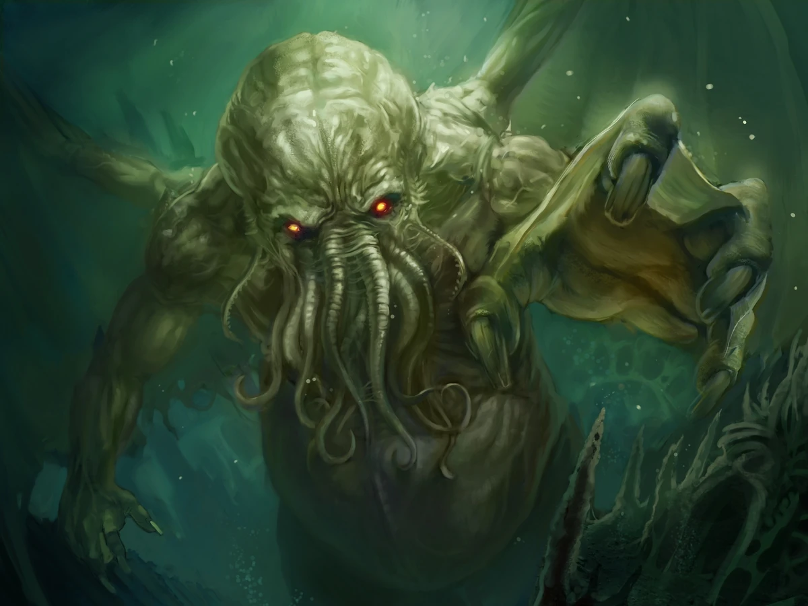

Cthulhu ("La llamada de Cthulhu")
Cthulhu es un dios Primigenio que debutó en el relato La llamada de Cthulhu, de Howard Phillips Lovecraft, publicado en 1928 en la revista Weird Tales. Según las historias de Lin Carter, la información existente sobre este ser estaría contenida principalmente en el ficticio Texto de R'lyeh.
Lovecraft describe a Cthulhu en el siguiente extracto de La Llamada de Cthulhu, en el que se alude al aspecto de una efigie que representa al dios "No estaría traicionando al espíritu de aquella cosa si digo que mi imaginación, algo calenturienta de por sí, creía percibir en ella, de forma simultánea, las figuras de un pulpo, un dragón, y una caricatura de ser humano. Una cabeza viscosa y cubierta de tentáculos destacaba sobre un cuerpo grotesco y escamoso con unas alas rudimentarias; pero era el perfil general de toda ella lo que resultaba más espantoso.". Además, cuando finalmente aparece físicamente se menciona que posee una piel viscosa y un tamaño desmesurado. Sin embargo, parece ser que Cthulhu es capaz de cambiar la forma de su cuerpo a voluntad, así como extender sus extremidades retráctiles y tentáculos como lo considere oportuno.